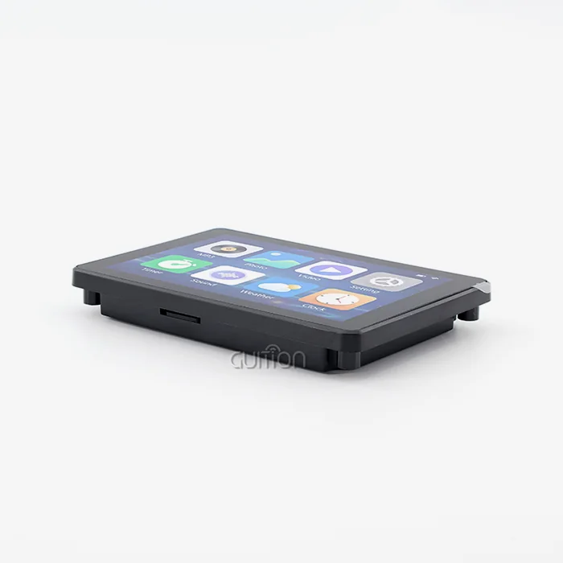

JC3248W535C_I_Y
Guition · 3.5 inch ESP32S3 display module
JC3248W535C_I_Y is a 3.5" 320x480 IPS Capacitive touch ESP32 display board by Guition based on the ESP32-S3 with 16MB flash, 8MB PSRAM.
Features, ports & interfaces
- QSPI display
- Capacitive touch
- 8 MB PSRAM
- 16 MB flash
- microSD (TF) card slot
- Wi-Fi 4 (802.11 b/g/n, 2.4 GHz) – version from the ESP32-S3 datasheet
- Bluetooth 5 (LE) – version from the ESP32-S3 datasheet
- Speaker interface
- Enclosure / shell
Specifications
| Parameter | Value | Source |
|---|---|---|
| Screen size | 3.5" | source |
| Resolution | 320x480 | source |
| Panel | IPS | source |
| Shape | Rectangular | |
| Display interface | QSPI | source |
| Display driver | AXS15231B | source |
| Touch | Capacitive | source |
| MCU / SoC | ESP32-S3R8 | source |
| MCU family | ESP32-S3 | |
| CPU frequency | 240MHz | source |
| Flash | 16MB | source |
| PSRAM | 8MB | source |
| SRAM | 512KB | source |
| Wi-Fi | Yes | source |
| Bluetooth | Yes | source |
| Category | ESP32 Display Module | |
| Active area | 73.4×49.0 mm | source |
| Connectivity | WiFi, Bluetooth | source |
| Dimensions | 94.5×62.0 mm | source |
| Expansion / IO | Up to 12 IOs | source |
| Interface detail | QSPI | |
| Memory | 512KB SRAM, 384KB ROM, 8M PSRAM, 16MB Flash | source |
| Operating temp. | -20℃ to 70℃ | source |
| Power consumption | Approx. 150mA | source |
| ROM | 384KB | source |
| Case / shell | Yes | source |
| Speaker interface | Yes | source |
| Storage temp. | -30℃ to 80℃ | source |
| Vendor | Guition | |
| Operating voltage | 5V DC | source |
Official links & documentation
Files
Offline copies are available on the interactive page.